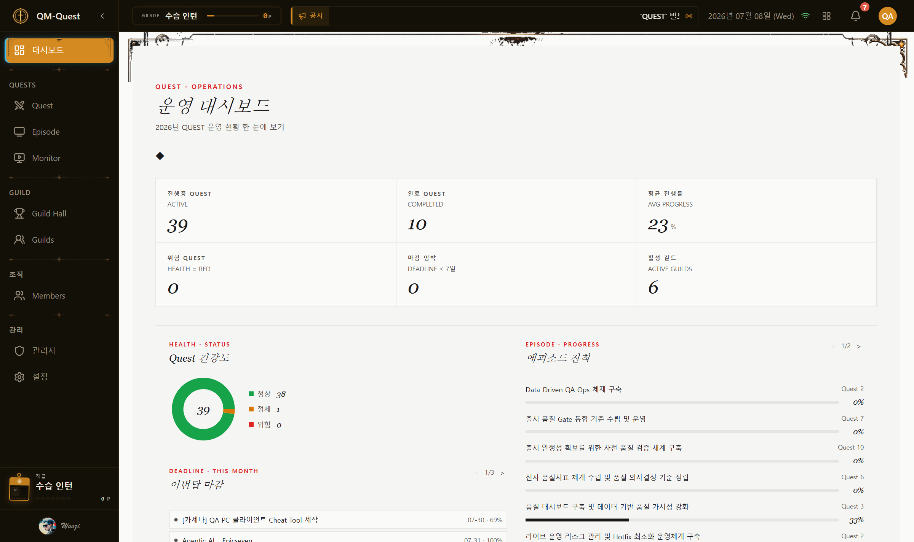
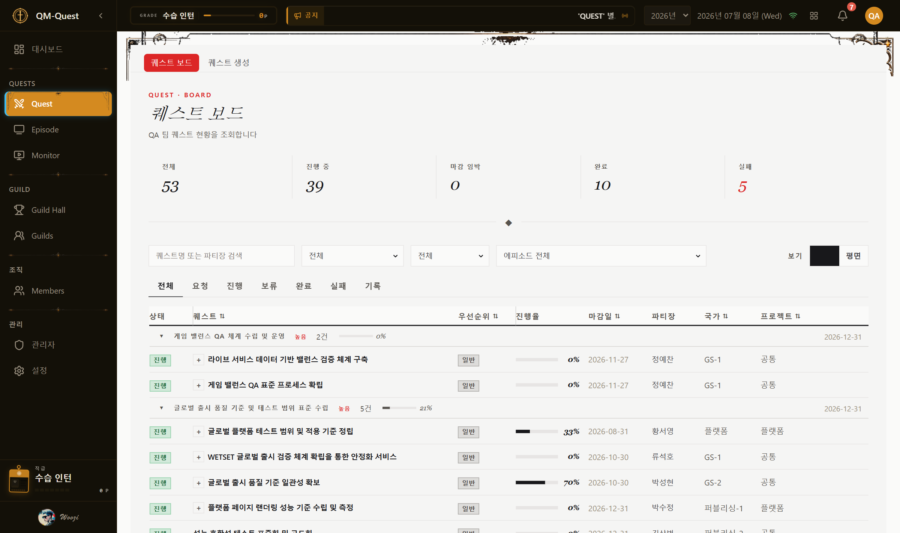
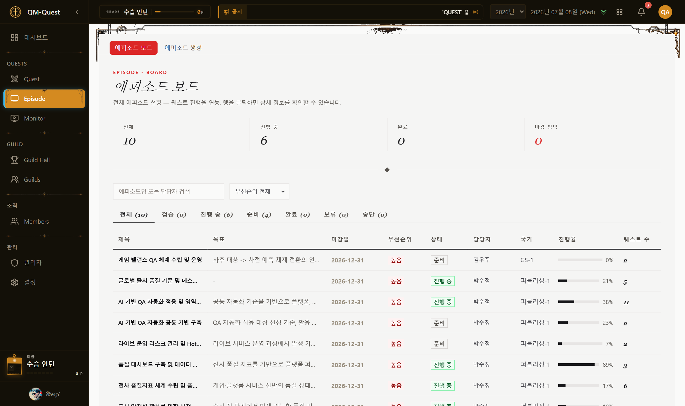
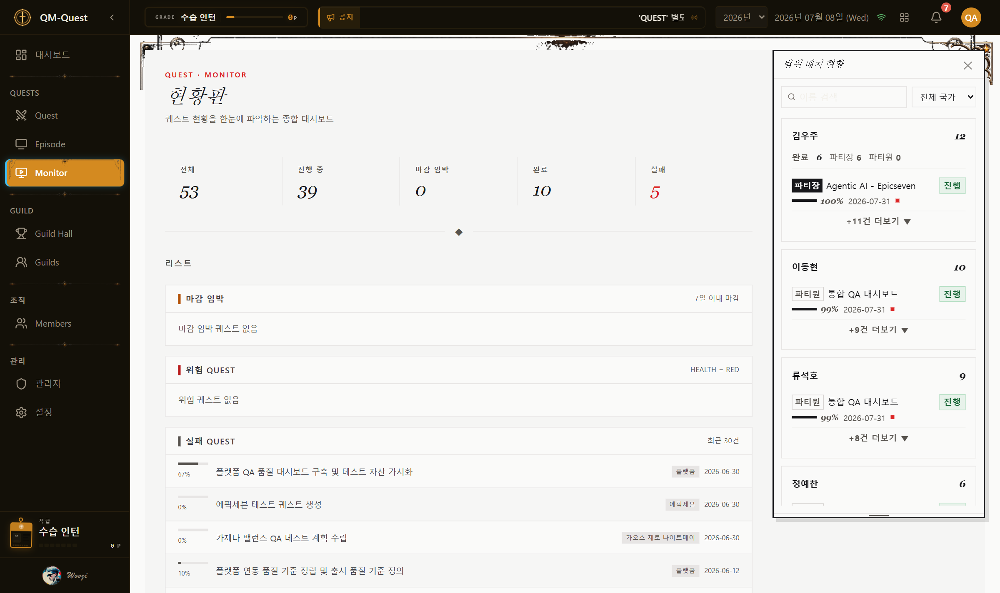
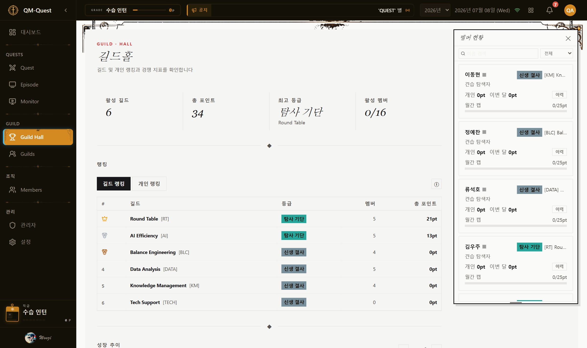
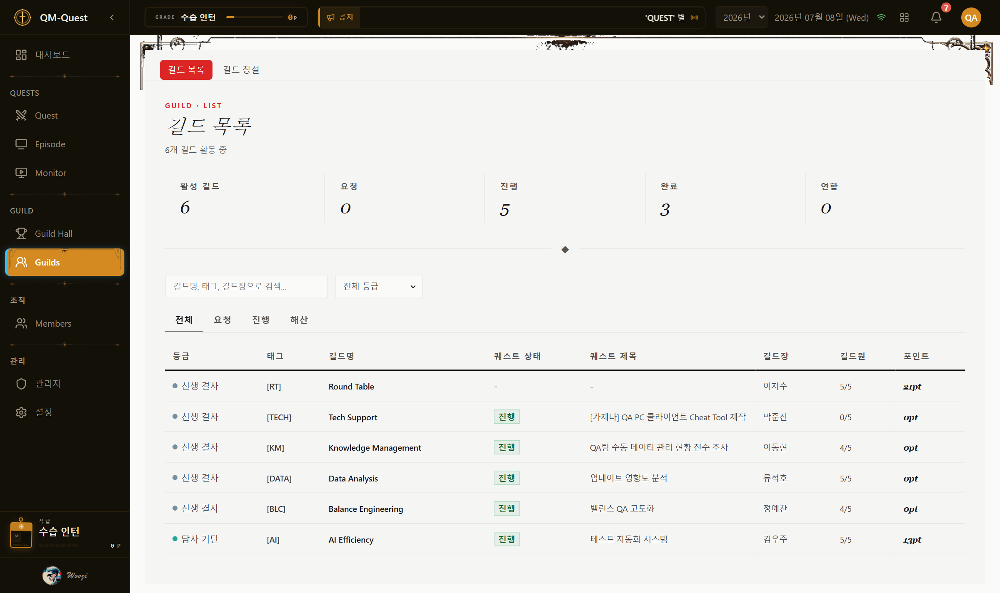
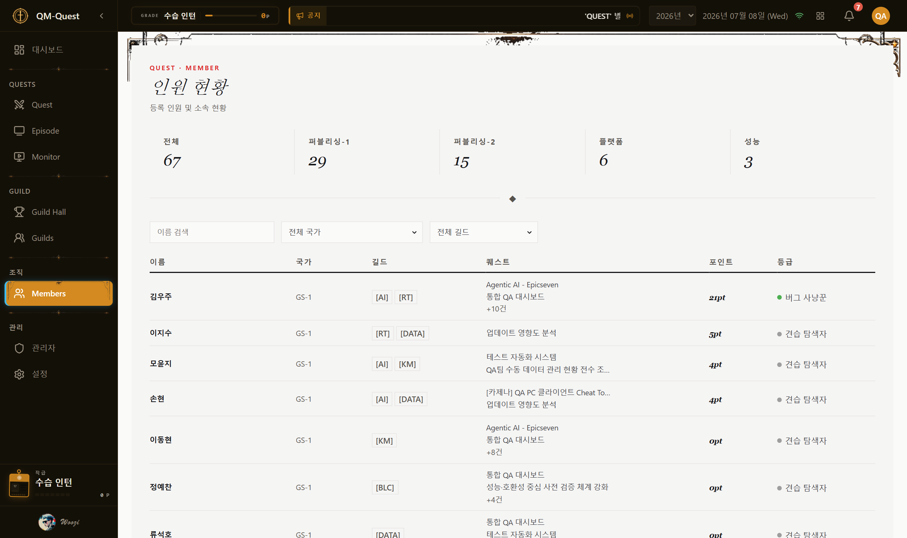
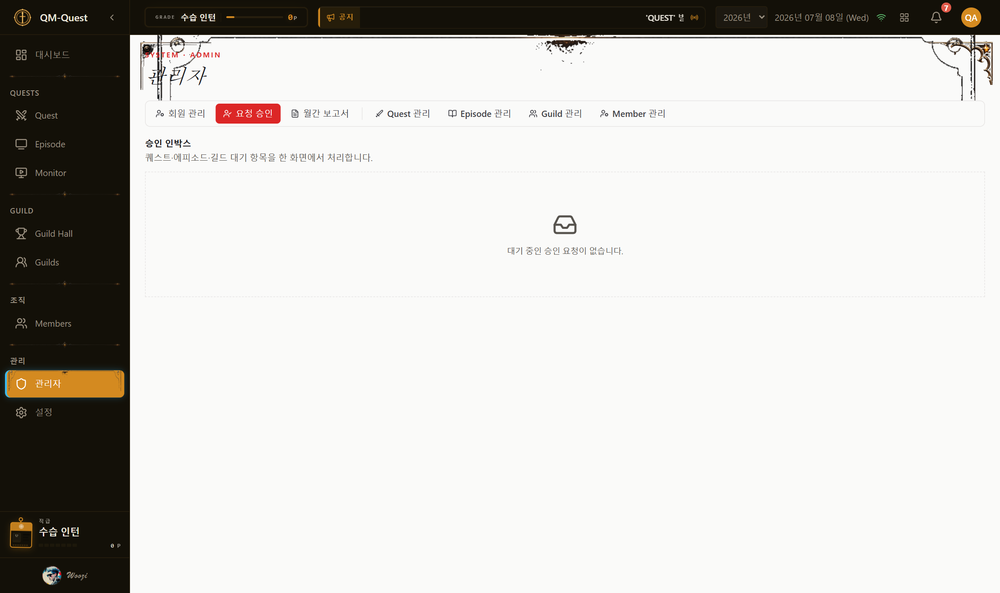
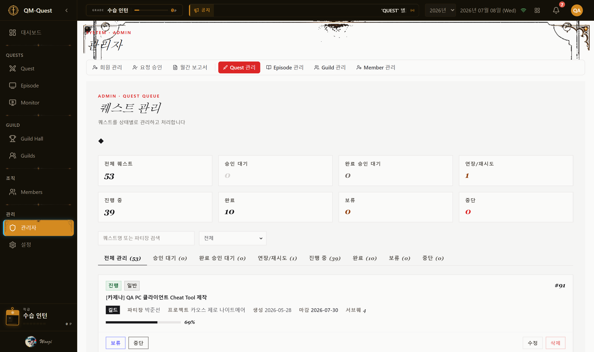
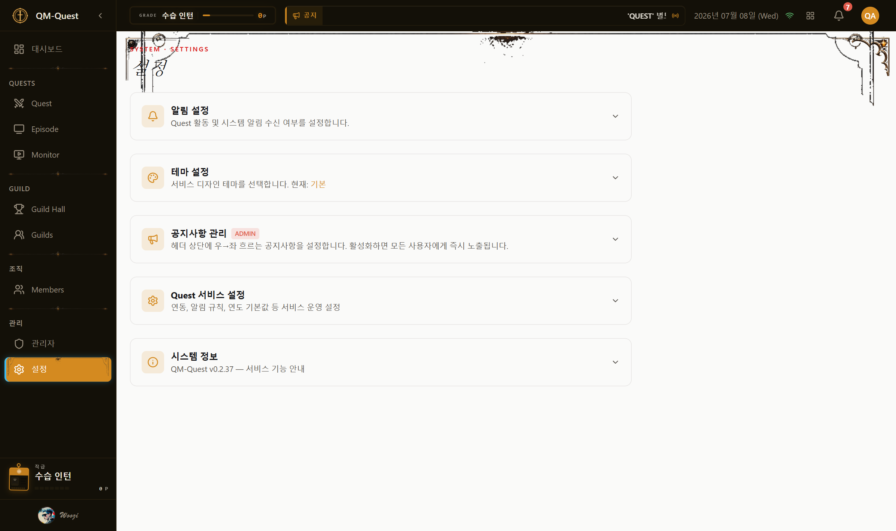

QM-Quest.
사용 가이드 · USER GUIDE
VOL. 01 · 2026.07
QA 업무를
퀘스트처럼 관리하기
퀘스트를 깨듯 업무를 완료하는 QA 업무 관리 서비스, QM-Quest입니다. 팀원은 업무를 "퀘스트"로 생성하고 진행하며, 완료할 때마다 포인트가 쌓여 등급이 오릅니다. 이 가이드는 처음 이용하는 분도 화면을 따라가며 바로 시작할 수 있도록 구성했습니다.
▸ Numbers
9
사이드바 메뉴
▸ Roles
4
역할 (관리자·매니저·멤버·뷰어)
▸ Themes
5
테마 (기본·픽셀·사이버펑크 외)
→ 오른쪽으로 넘겨서 목차부터 확인해 보세요. 키보드 ← → 로도 이동할 수 있어요.
QM-Quest.
INTRODUCTION
03 / 17
QM-Quest란? Core Concepts
처음 보면 낯선 용어 4개만 알면, 나머지는 자연스럽게 이해돼요.
No. 01
퀘스트
Quest
우리가 흔히 말하는 "업무" 한 건입니다. 제목·마감일·담당자(파티장)를 가지고, 진행률이 0%에서 100%까지 올라갑니다.
No. 02
에피소드
Episode
여러 퀘스트를 묶는 상위 단위입니다. 프로젝트나 캠페인처럼, 관련된 업무들을 하나로 모아 진행 상황을 함께 봅니다.
No. 03
길드
Guild
팀 단위 그룹입니다. 소속 멤버가 퀘스트를 완료하면 포인트가 쌓여 길드 등급이 올라가고, 다른 길드와 랭킹으로 경쟁합니다.
No. 04
파티장
Leader
퀘스트를 실제로 책임지는 사람입니다. 진행률 업데이트, 완료 요청 등 퀘스트의 핵심 조작은 파티장(또는 관리자·매니저)만 할 수 있어요.
비유로 정리하면 — "퀘스트=내가 해야 할 업무", "에피소드=업무들을 묶은 프로젝트", "길드=우리 팀"이라고 생각하시면 됩니다. 업무를 완료할 때마다 포인트를 얻고, 등급이 오르는 게임 같은 경험을 QA 업무에 그대로 적용한 서비스예요.
QM-Quest.
GETTING STARTED
04 / 17
시작하기 Login & Approval
Step 01
로그인
이름과 비밀번호로 로그인합니다. 계정이 없다면 가입 신청을 먼저 진행하세요.
Step 02
승인 대기
가입 신청 후에는 관리자의 승인이 필요합니다. 승인 전까지는 로그인이 제한될 수 있어요 — 조급해하지 않으셔도 됩니다.
Step 03
이용 시작
관리자가 승인하면 바로 이용 가능합니다. 이때 역할(관리자/매니저/멤버/뷰어)이 함께 부여됩니다.
가입 신청→
관리자 승인 대기→
승인 완료 · 역할 부여→
로그인 & 이용
내 역할이 궁금하다면 — 우측 상단 프로필 또는 설정 메뉴에서 확인할 수 있어요. 역할에 따라 보이는 메뉴와 할 수 있는 조작이 달라지니, 헷갈리면 13페이지 "권한 안내"를 참고하세요.
QM-Quest.
DASHBOARD
05 / 17
대시보드 Home

로그인 후 가장 먼저 보이는 화면 — 전체 퀘스트 운영 현황을 한눈에 확인합니다.
이 화면에서 확인할 수 있는 것
- KPI 카드 6장 — 진행중/완료 퀘스트 수, 평균 진행률, 위험 퀘스트, 마감 임박, 활성 길드 수
- Health(건강도) 분포 도넛 — 정상(초록)/정체(노랑)/위험(빨강) 비율과 위험 퀘스트 리스트
- 이번 달 마감 예정 퀘스트 리스트
- 에피소드별 진행률과 길드 랭킹 Top 순위
- 최근 활동(Activity) 피드
헷갈리기 쉬운 점 — 위험/마감임박 리스트를 클릭하면 대시보드에 머무는 게 아니라 Quest 보드로 이동해 해당 퀘스트 상세가 열립니다. "여기서 바로 상세를 본다"고 생각하지 말고, 클릭하면 화면이 전환된다는 걸 기억하세요.
QM-Quest.
QUEST BOARD
06 / 17
Quest 보드 Quest > Board

전체 퀘스트를 표 형태로 확인하고, 새 퀘스트를 만드는 곳입니다.
할 수 있는 일
- 퀘스트 목록 확인 — 상태·제목·유형·우선순위·진행률·마감일·파티장 등을 컬럼으로 표시
- 그룹 보기(에피소드별 묶음) / 평면 보기 전환
- 퀘스트 행을 클릭하면 우측에 상세 패널이 열림
- 상단 "퀘스트 생성" 탭에서 새 퀘스트 등록 — 프로젝트/제목/파티장/마감일은 필수 입력
참고 — 뷰어(VIEWER) 역할은 퀘스트를 조회만 할 수 있고, 생성 버튼을 눌러도 서버에서 차단됩니다. 화면 폭이 좁아지면 유형·우선순위 등 일부 컬럼이 자동으로 숨겨져요.
QM-Quest.
QUEST LIFECYCLE
07 / 17
퀘스트 라이프사이클 Status & Flow
퀘스트는 아래 9가지 상태 중 하나를 가지며, 정해진 순서로만 이동합니다.
| 상태 | 한글 라벨 | 게임 라벨 | 의미 |
|---|
| DRAFT | 초안 | Quest Draft | 생성됨, 아직 승인 전 |
| ACTIVE | 진행 | Quest Active | 승인되어 진행 중 |
| COMPLETE_WAIT | 검증 | Clear Pending | 완료 요청 후 관리자 검증 대기 |
| COMPLETED | 완료 | Quest Clear! | 완료 승인됨 |
| FAILED | 실패 | Quest Failed | 마감 초과로 자동 실패 |
| RETRY_WAIT | 재시도 | Retry Pending | 재도전 요청 후 승인 대기 |
| REJECTED | 반려 | Quest Rejected | 관리자가 승인 거부 |
| POSTPONE | 보류 | Quest Hold | 일시 중지 |
| DROP | 중단 | Quest Dropped | 영구 중단 (종결 상태) |
생성(초안)→승인·진행→완료요청→검증→완료
마감 초과→실패→재도전 요청→진행 복귀
"완료 요청" 버튼이 안 눌려요 — 진행률만 100%로는 부족합니다. 서브퀘스트가 있으면 모든 서브퀘스트가 완료 상태여야 하고, 서브퀘스트가 없으면 진행률 100% + 진행 메모(내용) 작성이 함께 필요해요. 완료 요청은 파티장만 할 수 있습니다.
Episode Quest > Episode

여러 퀘스트를 묶는 "업무 묶음" 단위를 관리하는 화면입니다.
이 화면에서 할 수 있는 일
- 에피소드 보드에서 진행 상황과 소속 퀘스트 확인
- 에피소드 상태 확인 — 진행 중 / 검증 / 완료 / 보류 / 중단 (5종)
- 에피소드 생성 탭 진입 (단, 생성 권한은 매니저 이상)
헷갈리기 쉬운 점 — "에피소드 생성" 버튼이 화면에 보이더라도, 일반 멤버 계정으로는 실제 생성이 되지 않습니다. 에피소드 생성·수정·삭제는 매니저(QA_MANAGER) 또는 관리자(ADMIN)만 가능해요.
Monitor Quest > Monitor

주의가 필요한 퀘스트만 모아서 보는 화면입니다.
이 화면에서 확인할 수 있는 것
- 마감 임박 퀘스트 리스트 (D-N 배지)
- 위험(danger) 퀘스트 — 블로커가 있고 오래 방치된 건
- 실패(failed) 퀘스트 — 마감을 넘겨 자동 실패 처리된 건
- 기간 탭(주간/월간/분기) 전환 및 항목 클릭 시 해당 퀘스트 상세로 이동
팁 — 팀 회의 전에 이 화면을 먼저 열어보면, 오늘 챙겨야 할 퀘스트를 빠르게 파악할 수 있어요.
Guild Hall & Guilds Team Ranking


위: Guild Hall(랭킹 대시보드) · 아래: Guilds(길드 목록/창설)
이 화면에서 할 수 있는 일
- Guild Hall — 길드 랭킹, 등급 분포, 성장 추이를 그래프로 확인
- Guilds — 전체 길드 목록 조회, 길드 창설 탭 진입
- 길드는 팀 단위 그룹으로, 소속 멤버의 퀘스트 완료 포인트가 쌓여 길드 등급이 올라갑니다
알아두면 좋은 점 — 한 사람이 소속될 수 있는 길드는 최대 3개까지입니다. Guild Hall은 독립적인 랭킹 대시보드로, Guilds 목록 화면과는 별개로 동작해요.
Members Team Directory

조직도 기준으로 전체 멤버를 조회하는 화면입니다.
이 화면에서 확인할 수 있는 것
- 조직(부서)별 멤버 요약 카드 및 검색·필터
- 멤버를 클릭하면 상세 패널이 열려 개인 포인트, 진행 중인 퀘스트, 소속 길드를 확인 가능
- 개인 포인트는 이번 달 획득분과 총합을 게이지바로 확인
참고 — 월간 포인트에는 25점 캡(상한)이 있어서, 이번 달 게이지가 가득 찼다면 더 완료해도 포인트가 추가되지 않아요. 다음 달에 다시 채워집니다.
QM-Quest.
POINTS & GRADES
12 / 17
포인트 & 등급 Gamification
퀘스트를 완료하면 역할과 유형에 따라 포인트를 얻고, 누적 포인트로 등급이 올라갑니다.
| 퀘스트 유형 | 포인트 |
|---|
| 길드 퀘스트 (파티장) | 4pt |
| 길드 퀘스트 (멤버) | 3pt |
| 메인 퀘스트 (파티장) | 3pt |
| 메인 퀘스트 (멤버) | 2pt |
※ 월간 포인트 캡: 25pt
| 개인 등급 | 임계값 |
|---|
| 견습 탐색자 | 0pt |
| 버그 사냥꾼 | 10pt |
| 품질 수호자 | 24pt |
| 정밀 감찰관 | 45pt |
| 결함 파괴자 | 75pt |
| 심판의 현자 | 120pt |
| 전설의 검증자 | 150pt |
| 길드 등급 | 임계값 |
|---|
| 신생 결사 | 0pt |
| 탐사 기단 | 12pt |
| 정예 토벌대 | 30pt |
| 왕립 근위단 | 60pt |
| 불멸의 기사단 | 100pt |
Health(건강도) 신호등이란? — 각 퀘스트 상단에 표시되는 초록/노랑/빨강 배지입니다. 초록은 정상 진행, 노랑은 30일 이상 업데이트가 없거나 진행이 정체된 상태, 빨강은 블로커(막힌 이유)가 있고 오래 방치된 위험 상태를 뜻해요. 단, 생성한 지 30일 이내인 퀘스트는 항상 초록으로 표시됩니다.
QM-Quest.
PERMISSIONS
13 / 17
권한 안내 Role Matrix
역할에 따라 보이는 메뉴와 할 수 있는 조작이 다릅니다. "내가 못 하는 게 정상"인 경우를 미리 알아두세요.
| 기능 | 관리자 | 매니저 | 멤버 | 뷰어 |
|---|
| 퀘스트 조회 | ✅ | ✅ | ✅ | ✅ |
| 퀘스트 생성 | ✅ | ✅ | ✅ | ❌ |
| 퀘스트 진행/완료요청 (본인이 파티장인 경우) | ✅ | ✅ | ✅ | ❌ |
| 에피소드 생성/관리 | ✅ | ✅ | ❌ | ❌ |
| 퀘스트 관리자 승인/반려 | ✅ | ✅ | ❌ | ❌ |
| Guild/Member 관리자 탭 | ✅ | ❌ | ❌ | ❌ |
| 회원 관리 (승인/역할변경) | ✅ | ❌ | ❌ | ❌ |
| 월간 보고서 확정 | ✅ | ❌ | ❌ | ❌ |
| 설정 (테마/알림 개인설정) | ✅ | ✅ | ✅ | ✅ |
뷰어(VIEWER)이신가요? — 뷰어는 모든 화면을 조회할 수 있지만, 생성·수정 버튼은 눌러도 서버에서 막힙니다. 이는 오류가 아니라 의도된 읽기 전용 권한이에요. 권한이 필요하면 관리자에게 역할 변경을 요청하세요.
관리자 메뉴 Admin Panel
매니저 이상 역할에게만 사이드바에 "관리자" 그룹이 노출됩니다. 총 7개 탭으로 구성됩니다.
매니저도 접근 가능
요청 승인 · 월간 보고서
Quest 관리 · Episode 관리
승인 대기 항목 처리, 보고서 열람/코멘트, 퀘스트·에피소드 상태 워크플로 처리가 가능합니다.
관리자(ADMIN) 전용
회원 관리 · Guild 관리
Member 관리
사용자 승인/역할변경/삭제, 길드·멤버 관리자 기능은 관리자만 접근할 수 있습니다.

요청 승인 탭 — 대기 중인 승인 요청을 처리합니다.

Quest 관리 탭 — 승인/반려/완료승인/연장·재도전 승인 등을 처리합니다.
참고 — 매니저 계정으로 회원 관리 탭에 직접 진입하면 자동으로 요청 승인 탭으로 이동합니다. 오류가 아니라 권한에 따른 정상 동작이에요.
설정 Preferences

알림, 테마, 비밀번호를 관리하는 개인 설정 화면입니다.
이 화면에서 할 수 있는 일
- 알림 설정 — 퀘스트 활동/시스템 알림 켜고 끄기
- 테마 변경 — 아래 5종 중 선택
- 비밀번호 변경
| 테마 | 분위기 |
|---|
| 기본 | 슬레이트 다크 (현재 운영 테마) |
| 픽셀 게임 | 농장 톤 픽셀 아트 |
| 사이버 펑크 | 인디고 + 마젠타 + 네온 시안 |
| 중세 판타지 | 다크 월넛 길드홀 + 금박 |
| 무협 무림 | 먹빛 + 화선지 + 비취/주사 인장 |
FAQ / 팁 자주 헷갈리는 것들
완료 요청 버튼이 안 눌러져요.
진행률 100% 외에 진행 메모 작성이 필요합니다(서브퀘스트가 없는 경우). 서브퀘스트가 있다면 전부 완료 상태여야 해요.
에피소드를 만들려는데 반영이 안 돼요.
에피소드 생성은 매니저 이상만 가능합니다. 일반 멤버 계정에서는 서버가 거부합니다.
대시보드에서 위험 퀘스트를 클릭했더니 다른 화면으로 넘어가요.
정상 동작이에요. 대시보드는 요약만 보여주고, 상세 확인·조작은 Quest 보드에서 이루어집니다.
포인트를 얻었는데 이번 달 총합이 그대로예요.
월간 포인트 캡(25pt)에 도달했을 수 있어요. 초과분은 반영되지 않고 다음 달에 다시 쌓입니다.
퀘스트 상태가 갑자기 "실패"로 바뀌었어요.
마감일이 지나면 시스템이 자동으로 진행 중 퀘스트를 실패로 전환합니다. 재도전 요청을 통해 다시 진행할 수 있어요.
반려된 퀘스트를 방치하면 어떻게 되나요?
반려 상태로 5일이 지나면 자동으로 "중단(DROP)"으로 전환됩니다. 빠르게 재제출하거나 확인이 필요해요.
회원 관리 탭이 안 보여요.
회원 관리는 관리자(ADMIN) 전용입니다. 매니저 계정에는 노출되지 않아요.
길드에 여러 개 가입할 수 있나요?
네, 최대 3개까지 동시에 소속될 수 있습니다.
End of Guide
QM-Quest.
궁금한 점은 팀 관리자에게 문의해 주세요.
이 가이드는 QM-Quest 서비스 구조 조사 결과를 바탕으로 작성되었습니다.
VOL. 01 · 2026.07 · USER GUIDE